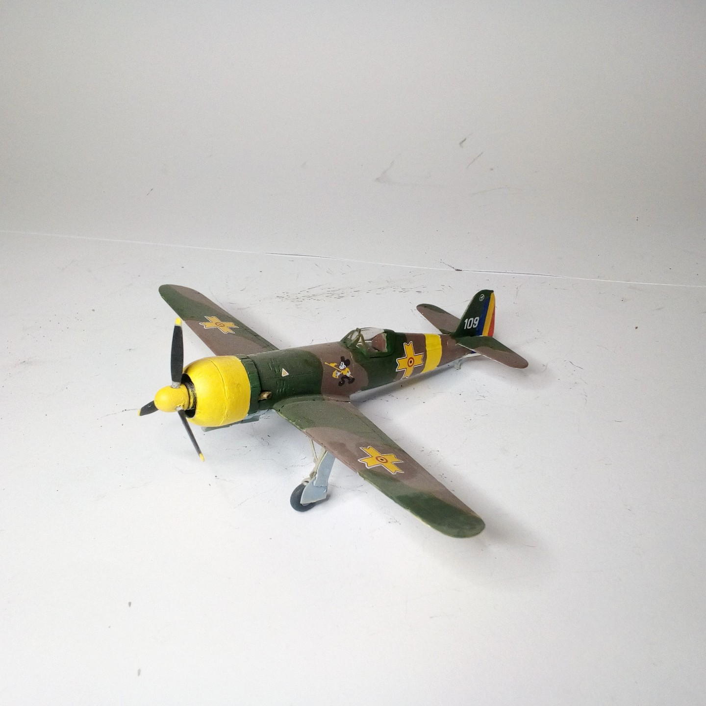
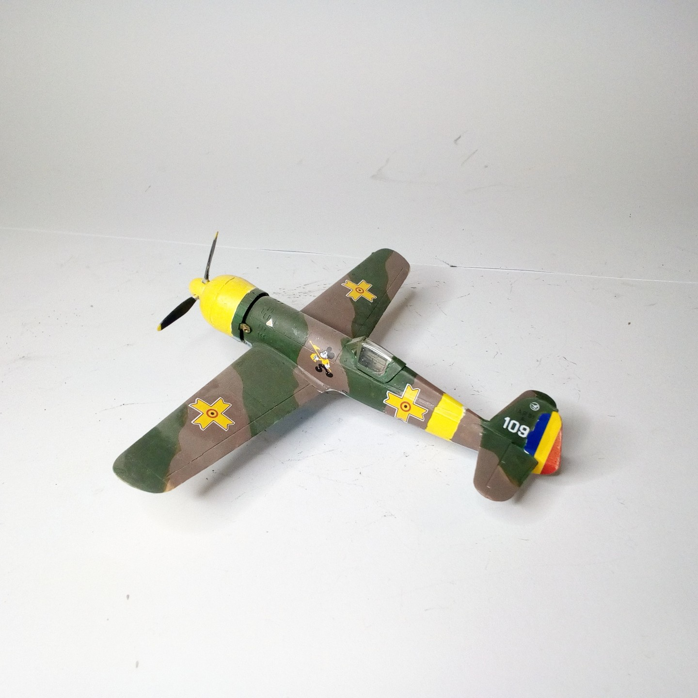

Aerei · scale model archive
IAR 80 A
IAR 80 A — Kit: Amodel, Scale: 1/72. Aeronautica Regală Română (Romanian Royal Aeronautics 1915-1941) Esc. 53, Grupul 7 Vânătoare 109 (Constantin…

Photo gallery

English description
Aeronautica Regală Română (Romanian Royal Aeronautics 1915-1941) Esc. 53, Grupul 7 Vânătoare 109 (Constantin Pomut/Wilhelm Steinmann) Ploesti
#1/72 #Amodel
Descrizione italiana
Aeronautica Regală Română (Aeronautica Reale Rumena 1915-1941) Esc. 53, Grupul 7 Vânătoare 109 (Constantin Pomut/Wilhelm Steinmann) Ploesti.